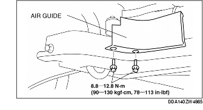

FRONT HEATED OXYGEN SENSOR (HO2S) REMOVAL/INSTALLATION [ZY]
id0140008048c0
1. Disconnect the negative battery cable.
2. Perform the following procedure for easier access.
-
(1) Remove the air cleaner. (See INTAKE-AIR SYSTEM REMOVAL/INSTALLATION [ZY].)
-
(2) Remove the air guide shown in the figure.

3. Remove the front HO2S using the SST.
4. Install in the reverse order of removal.
-
Front HO2S tightening torque
-
29-49 N·m {3.0-4.9 kgf·m, 22-35 ft·lbf}